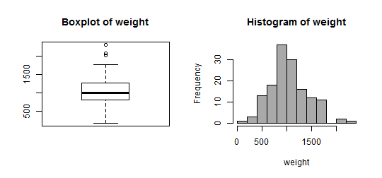
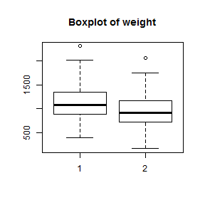
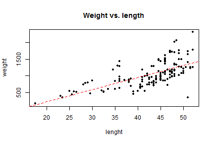
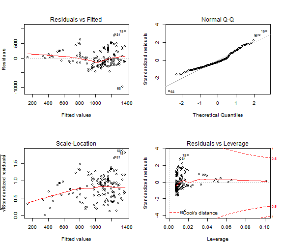

Librería RCommander y técnicas de análisis estadístico.
¿Qué es RCommander?
Es una interfaz gráfica de usuario (GUI)
Facilita el manejo de R y permite generar instrucciones de R
Incluye la posibilidad de realizar distintos tipos de análisis (análisis exploratorio, distribuciones de probabilidad, inferencia paramétrica y no paramétrica, análisis de la varianza de uno o varios factores,....)
Es una librería que no está incluida en la instalación base de R
install.packages("Rcmdr")
Una vez instalada, sólo hace falta iniciarla en cada nueva sessión de R de la siguiente forma
library(Rcmdr) # tarda un poco puesto que conviene instalar las librerías adicionales que solicita
Si se cierra R-Commander (Rcmdr) pero no la sesión de R, se vuelve a cargar
Commander()
Aspecto de la interfaz de R Commander
La interfaz de R commander tiene varias partes principales
En la parte superior se presentan una serie de opciones de menú (Fichero, Editar, ...)
A continuación, hay dos ventanas principales:
R Script, donde aparecen todas las instrucciones que se generarán cuando seleccionemos opciones del menú superior.
Salida, donde se presenta en formato texto el resultado de la ejecución de las diferentes opciones del menú
Directorio de trabajo, scripts, resultados y workspace de R
El menú 'Fichero' sirve para gestionar las instrucciones a ejecutar, los objetos creados en R, los resultados generados, etc... pero NO permite cargar conjuntos de datos para el análisis.
El directorio de trabajo representa el directorio local donde queremos trabajar (donde estan los archivos a cargar, donde queremos guardar los scripts, ...)
Las instrucciones de la ventan R Script (cargarlas o guardarlas)
Los resultados de la ventana Salida (guardar)
El entorno de trabajo (workspace) con todas las variables que tenemos creadas
En principio, las opciones más importantes de este menú sería 'Cambiar directorio de trabajo' (al comenzar a utilizar Rcmdr) y 'Guardar las instrucciones' (al finalizar nuestra sesión de Rcmdr).
En cualquier caso, al cerrar Rcmdr también nos preguntará si queremos guardar el script y el espacio de trabajo.
Distribuciones de probabilidad
El menú 'Distribuciones' dispone de diversas funciones para estudiar diferentes tipos de distribuciones. En particular
Se pueden obtener los cuantiles teóricos para una distribución (por ejemplo, para hallar cual es el valor crítico zα / 2 de una normal)
Se pueden obtener las probabilidades Pr(Z < z)
Representar las funciones de densidad y de probabilidad
Generar una muestra simulada para una distribución determinada
Ejercicio 5
Cuantiles teóricos: Obtener un vector y con los cuantiles 25%,50%,75%,100% de la normal de media 0 y sd. 1.
Obtener una muestra de 100 valores aleatorios de una uniforme entre 0 y 1.
Cuantiles muestrales: Obtener un vector x con los cuantiles 25%,50%,75%,100% de la muestra (se utiliza la función quantile()).
Hacer un plot(x,y); abline(0,1)
Importar conjuntos de datos (I)
El menú Datos nos permite importar conjuntos de datos desde varios formatos (txt, SPSS, Excel, ...). Vamos a cargar el conjunto de datos 'ddt.txt':
group: Grupo de observaciones (mediciones en dos temporadas)
location: Código del lugar de captura (de 1 a 3)
location_name: Nombre del lugar (afluente, medio, desembocadura)
species: Código de especie (de 1 a 2)
species_name: Nombre de la especie del pez (buffalo, catfish)
length: Longitud del pez(en cm.)
weight: Peso pez (en grs.)
DDT_conc: Concentración de DDT (% de peso) medida
Se puede descargar el archivo en local y luego importarlo pero también existe la posbilidad de leer directamente desde internet
Filtrar observaciones (filas) del conjunto de datos
Ver nombres de las variables (columnas) del conjunto de datos
Guardar el conjunto de datos (en formato R) o exportar a formato texto plano
La opción 'Modificar variables del conjunto de datos activo' permite:
Renombrar las variables
Calcular nuevas variables
Tipificar o estandarizar las variables
Reordenar niveles de un factor
Análisis estadísticos
El menú Estadísticos nos permite realizar diversos análisis estadísticos.
En la opción 'Resúmenes' podemos:
Obtener resúmenes estadísticos de las variables conjunto de datos. Estos resúmenes se pueden hacer por grupos de una variable factor.
Hallar correlaciones entre variables (Pearson, Spearman, parcial).
Realizar test de correlaciones significativas y de normalidad de las variables.
La opción 'Gráficas' nos permite complementar los análisis mediante
Gráficos histograma para estudiar la distribución de los datos
Diagramas de caja para analizar la varianza de las variables
Tablas de contingencia y tests de proporciones
En la opción 'Tablas de contingencia' podemos generar tablas de contingencia (de doble o múltiple entrada) para analizar relaciones entre dos o más variables factor.
REQUISITOS: Es preciso tener, al menos, 2 variables factor para generar este tipo de tablas.
A partir de las tablas de doble entrada se pueden realizar tests de independencia de la chi-cuadrado
En la opción 'Proporciones' podemos realizar pruebas sobre la proporción de éxitos (o de un grupo determinado) en una población
REQUISITOS: Es preciso tener 1 variable factor con 2 niveles para realizar este test.
Ejercicio 5
Realizar un resumen descriptivo de 'DDT_conc' para cada uno de los 2 grupos de observaciones.
Realizar un test para comparar si la proporción de observaciones en el grupo 1 es igual a la del grupo 2
Realizar una tabla de contingencia para comparar los 2 grupos de observaciones con las 2 especies de peces.
PISTA: La variable 'group' ha sido cargada en R como variable numérica y debería ser un factor.
Realizar un histograma comparativo del 'DDT_conc' del grupo 1 con el grupo 2
Nivel avanzado: Gráficos más complejos
Se puede hacer un gráfico histograma combinado con diagrama de cajas y añadir una curva de densidad normal
En la opción 'Medias' podemos realizar pruebas sobre la media estadística de una o más poblaciones.
El test “Test t para una muestra” corresponde a la prueba clásica sobre la media de una población cuando la varianza es desconocida.
Los “Test t para muestras independientes” y “Test t para datos relacionados” permiten comparar, dadas dos muestras (o dos grupos), las medias de sus respectivas poblaciones.
REQUISITOS: Para realizar el test de muestras independientes, Rcmdr necesita una variable factor con dos niveles para diferenciar cada muestra.
Los tests "ANOVA" nos permiten comparar medias para un mayor número de niveles o grupos (2 ó más).
En la opción 'Varianzas' se puede analizar la varianza estadística de una o más poblaciones
El test F-ratio contrasta, dadas dos muestras, el cociente de varianzas de sus respectivas poblaciones.
REQUISITOS: De nuevo, en Rcmdr es preciso una variable factor con dos niveles para diferenciar cada muestra.
Otros tests que permiten comparar la igualdad de varianzas entre mayor número de niveles son el test de Bartlett y el de Levene.
Esquema de aplicación de test de comparación de medias
Esquema de aplicación de test de comparación de medias (medidas repetidas)
Ejercicio 6
Comparar el peso de los peces del grupo 1 con el peso de los del grupo 2.
1º PASO: ¿Se asume normalidad de la variable peso?

shapiro.test(ddt$weight)
##
## Shapiro-Wilk normality test
##
## data: ddt$weight
## W = 0.9825, p-value = 0.06299
Si hay dudas en la normalidad, el t-test no se puede aplicar y hay que acudir a alternativas no paramétricas.
Ejercicio 6
Comparar el peso de los peces del grupo 1 con el peso de los del grupo 2.
2º PASO: ¿Se asume igualdad de varianzas de peso entre los grupos? 
bartlett.test(weight ~group, data = ddt)
##
## Bartlett test of homogeneity of variances
##
## data: weight by group
## Bartlett's K-squared = 0.1329, df = 1, p-value = 0.7155
Si las varianzas entre grupos son iguales, se debe especificar en opciones del t-test (aprox. Welch).
Tests no paramétricos
En la opción 'Tests no paramétricos' se pueden realizar distintas pruebas de estadísticas cuando no se verifican ciertas hipótesis.
El “test de Wilcoxon” es equivalente al t-test para muestras independientes cuando no se puede asumir normalidad en los datos.
El “test de Kruskal-Wallis” y el “test de Friedman” son tests basados en el rango muestral de las observaciones (equivalentes al ANOVA cuando no se puede asumir normalidad).
EJEMPLO: Comparar 'DDT_conc' de los peces del grupo 1 con los del grupo 2.
Modelos estadísticos: ANOVA
La opción 'Medias' permite realizar el análisis de varianza de uno o varios factores para comparar las medias de grupos (similar al t-test pero con 2 o más niveles en las variables factor).
La opción 'Tests no paramétricos', con los “test de Kruskal-Wallis” y el “test de Friedman”, son pruebas no paramétricas alternativas al ANOVA.
Junto a la 'Gráfica de las medias' permite llevar a cabo un análisis comparativo de los efectos de los factores y sus interacciones en un modelo.
Esquema de aplicación de test ANOVA
Ejercicio 7
EJEMPLO: Analizar las diferencias en el peso de los peces entre las diferentes localizaciones.
1º PASO: ¿Hay diferencias entre todos los niveles (especies)?
# Comprobamos si la varianza es constantebartlett.test(weight ~location_name, data = ddt)
##
## Bartlett test of homogeneity of variances
##
## data: weight by location_name
## Bartlett's K-squared = 0.7883, df = 2, p-value = 0.6742
# En caso de homoc. podemos hacer anova
anova.mod1 <-aov(weight ~location_name, data = ddt)
summary(anova.mod1)
## Df Sum Sq Mean Sq F value Pr(>F)
## location_name 2 942700 471350 3.44 0.035 *
## Residuals 141 19332838 137112
## ---
## Signif. codes: 0 '***' 0.001 '**' 0.01 '*' 0.05 '.' 0.1 ' ' 1
# Si no se asume var. cte. o no hay normalidad, recurrimos al test K.-W.kruskal.test(weight ~location_name, data = ddt)
##
## Kruskal-Wallis rank sum test
##
## data: weight by location_name
## Kruskal-Wallis chi-squared = 6.13, df = 2, p-value = 0.04665
Ejercicio 7
EJEMPLO: Analizar las diferencias en el peso de los peces entre las diferentes localizaciones.
2º PASO: ¿Cómo son las diferencias 2 a 2? (sólo si hay más de 2 niveles en el factor)
La representación gráfica de un modelo simple es posible en 'Gráficas->Diagrama de dispersión' seleccionando la opción de mínimos cuadrados. Pero se puede hacer también con plot() y abline()
plot(ddt$length, ddt$weight, main ="Weight vs. length", xlab ="lenght", ylab ="weight",
pch =20)
abline(regmod.1, col ="red", lty ="dashed")

Análisis de modelos
Con el menú 'Modelos->Gráficas->Gráficas básicas de diagnóstico' se pueden obtener una serie de gráficos útiles para el diagnóstico de las hipótesis habituales (homocedasticidad, normalidad, observaciones atípicas)
par(mfrow =c(2, 2))
plot(regmod.1)

Ejercicio 8
Parece que el modelo weight = β0 + β1length + ε presenta problemas.
SUGERENCIA: Transformar variables length ⇒ length3 y weight ⇒ sqrt(weight) y volver a hacer el ajuste.
En Rcmdr se encuentran disponibles otros análisis útiles en regresión (Breusch-Pagan para la homocedasticidad, Durbin-Watson para la independencia).
Nivel avanzado: Intervalos de confianza y predicción de la regresión
Para los modelos lineales simples, se pueden representar los intervalos de confianza y predición de la recta